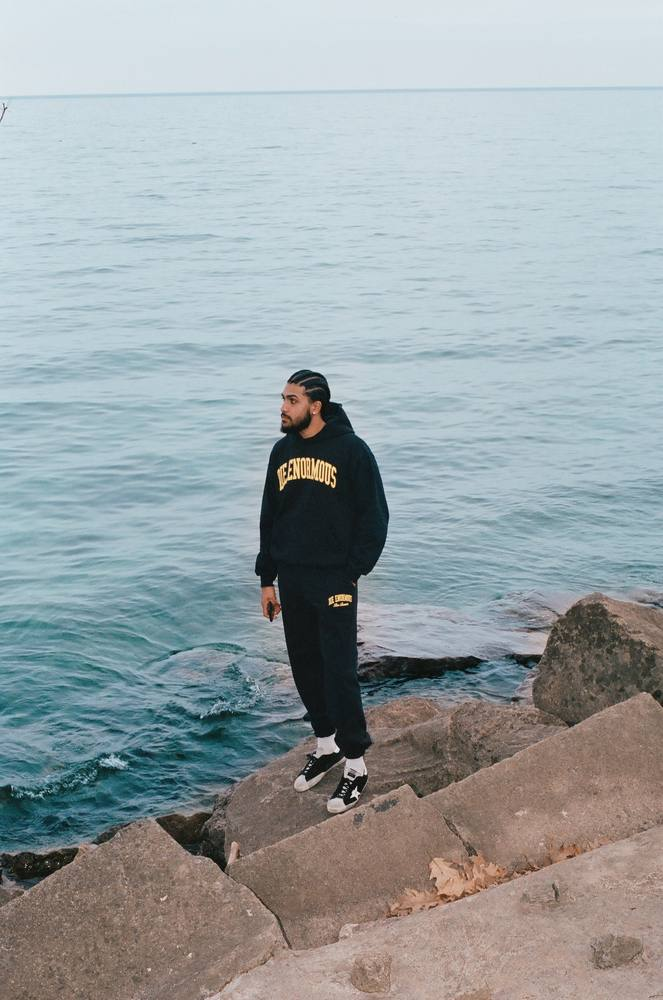

Producer.Creative director.Storyteller.
Joshua Deosaran · Toronto + New York
I’m a producer and creative director based in Toronto, with nearly a decade of experience in unscripted television and independent film. My work spans broadcast networks, streaming platforms, and the open ocean, from lobster boats off the coast of Maine to Search and Rescue operations on Vancouver Island.
My credits include series for Apple TV+, Prime Video, and The Weather Channel, as well as my debut feature documentary Oyster Island, set to premiere at festivals in 2026. I bring the same care and discipline to a ten-episode network series as I do to a single scene.

FIG. 01The best stories aren’t found, they’re earned through time, trust, and showing up.Joshua Deosaran, 2026
Three cities. One through line.
New York City
Growing up in Staten Island and Queens gave me an early education in culture, community, and paying attention. The city moves fast and expects you to keep up, whether you’re absorbing the music, the fashion, or just watching how people carry themselves on the train. I was always watching.
That curiosity became a constant. I got obsessed with how stories get told, in music, in sport, in science. I once wrote to NASA as a kid asking about extraterrestrial life. I’m still asking questions like that. The medium has just gotten a lot more cinematic.
Fort Lauderdale
In 2004, my mom and I moved to South Florida, a big shift, but one that opened things up considerably. Life ran at a different pace down there. Warmer, more open. We were in the eye of Hurricane Katrina that summer, which sounds dramatic, but honestly, what I remember most is how people just got on with it.
My mom made sure there was still room to be a kid, weekends on Ocean Drive, long afternoons on South Beach, watching the world go by outside the Versace Mansion. That time taught me to slow down and actually look at where I am. It’s something I carry into every shoot.
Toronto
I moved to Toronto at 14 to be closer to my grandmother and great aunts, and it turned out to be the chapter that shaped everything. It’s where I grew up for real, made lifelong friends, figured out who I was, and eventually found the work I wanted to do.
Toronto is a city built from the collision of cultures, and learning to move through that environment taught me something invaluable: how to listen before you speak, and how to connect with people who see the world very differently than you do. That skill, building trust quickly, across difference, is probably the most important thing I bring into the field.
What’s next
Right now I’m focused on bringing everything together, the places I’ve lived, the people I’ve met, the kind of stories that don’t get told often enough. Oyster Island is the most complete expression of that so far, and there’s more coming.
I want to keep building on documentary work while taking on projects with more creative ownership. If you’re a network, production company, or independent creator who cares about authentic, character-driven storytelling, I’d love to hear what you’re working on.
On the ground. On the air.
Let’s tell a story worth rewinding.
Whether you have a project in mind or just want to connect, I’d love to hear from you.
joshua.deosaran@gmail.com